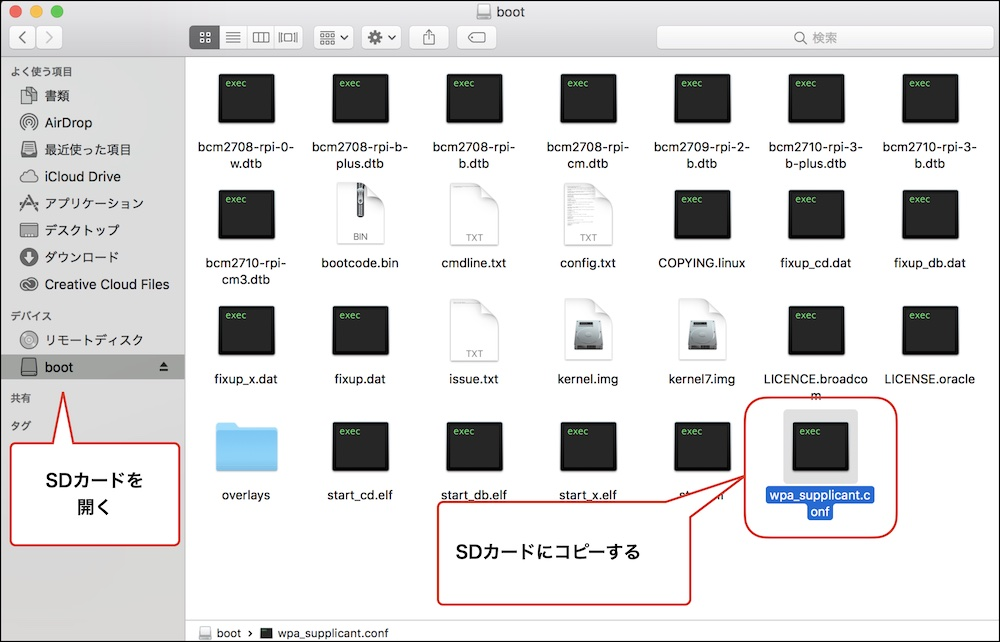

Wi-Fi設定
Wi-Fiへの接続、SSHでログインできるようにしていきます。
焼き込みのみでは初回起動時にWi-Fiへの接続・SSHでのログインが出来ないため、ここで設定を行っています。
wpa_supplicant.confのダウンロード
| 作業デバイス | |
|---|---|
wpa_supplicant.conf をダウンロードします。
SDカードをPCで開き、wpa_supplicant.confファイルをSDカード内にコピーします。

wpa_supplicant.confの編集
| 作業デバイス | |
|---|---|
wpa_supplicant.confを任意のテキストエディタで開き、ssidに接続先のssid, pskにpasswordを記載します。

例) アクセスポイントのSSIDがabcde0000001, passwordが123456789の場合
1 2 3 4 5 6 7 8 9 | |
5GHz
Raspberry Pi3は、5GHz帯のWi-Fiは非対応です。2.4GHz帯のWi-Fiのアクセスポイントを設定するようにしてください。
Wi-Fiスポットにパスワードなしでログインする場合の設定
| 作業デバイス | |
|---|---|
PasswordのないWi-Fiスポットに接続する場合は、下記例を参考にしてください。key_mgmt=NONEをつける事で、パスワードなしでログインできます。
1 2 3 4 5 6 7 8 | |
SDカードの挿入とRaspberryPiに電源を投入
| 作業デバイス | |
|---|---|
wpa_supplicant.confを追加したSDカードをRaspberryPiに差し込み、電源を投入します。RaspberryPiは、wpa_supplicantで指定されたアクセスポイントへ接続を開始します。接続に成功するとDonkeyCarに搭載している赤い基板の液晶にIPアドレスが表示されます。
wpa_supplicantの修正
接続に失敗した場合は、wpa_supplicant.conf を修正してSDカードに再度コピーすることで接続先の変更が可能です。